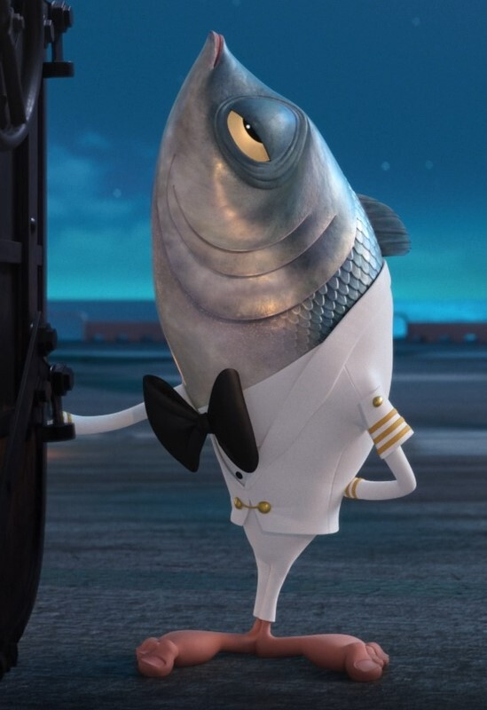

Software Developer
Hey! I'm tofi lagman from Manila, Philippines.
Collection of various open source contributions and personal projects on GitHub.
Github
Java / Kotlin
Dotnet
Node
Docker
Linux
VS Code
Intellij